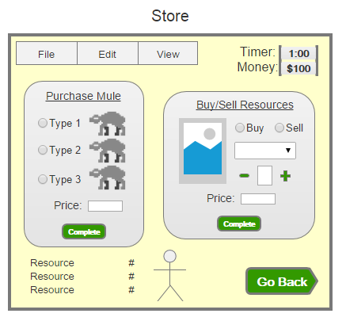
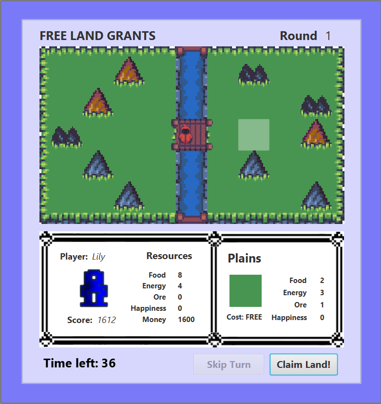
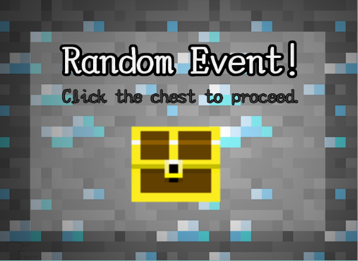
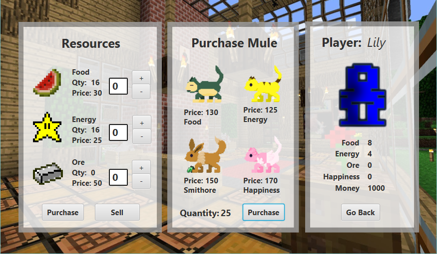
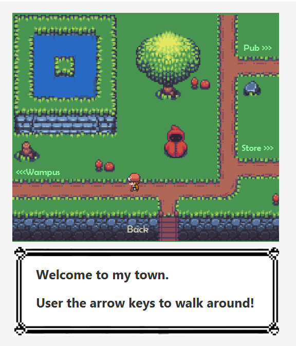

M.U.L.E.
M.U.L.E. or Multiple Use Labor Element is a turn-based, multiplayer video game originally published in 1983 for the original Atari PC (it’s a very old game). Players compete against each other to amass the largest amount of wealth by acquiring land and accumulating resources. Throughout the course of a semester, I worked with a group of peers to recreate this classic game, but with our own spin.
PROJECT OVERVIEW
Q. How long?
A. 3 months
Q. With whom?
A. Team of 4
Q. Using what?
A. Java, JavaFX, SceneBuilder, IntelliJ, GitHub, Adobe PhotoShop, Axure RP Pro, Gradle, Checkstyle
TOOLS
Version Control:
This was the first lengthy project I worked on using Git. While frustrating at first, I quickly discovered the importance of using distributed version control systems for group projects. There were multiple times in which we needed to go back to an earlier version of the project because something went wrong in the code. We were also able to see exactly what changes were made by who and how often each person was contributing to the code.
Development Environment:
I worked on this project using IntelliJ IDEA. Having used this IDE for other projects, I was already very familiar with its interface and features.
PROCESS
Contract:
From the get-go, we established a team contract to outline the goals, structure, team roles, and procedures of the project. This ensures that everyone kicks off on the same page and serves as a reminder of the agreed-upon terms throughout the lifespan of the project.
Agile SCRUM Workflow:
The project was split up into 12 milestones, each milestone running a week long. At the end of each milestone, the team presented our project deliverable. Prior to coding, we initialized a product backlog to keep track of all the requirements needed for the project. In the same document, we also created a sprint backlog to list all the work we needed to address during the next sprint. At the beginning of each sprint, we added priority items to the product backlog and specified what tasks we wanted to complete in the sprint backlog. Next to each task, we recorded the number of hours expected to complete that task. At the end of the spring, we updated the number of remaining hours for each task.
BRAINSTORMING & DIAGRAMS
Use Cases & Robustness Diagrams:
One of the first artifacts we needed to nail down was our list of use cases. The use cases we developed comprised of various actors and actions that could be performed in our game. After creating a list of use cases, we went back and developed robustness diagrams to represent certain use cases. By drawing up these robustness diagrams, we were able to identify potential objects and object responsibilities. Below is an example of one of our diagrams.
Unified Modeling Language (UML) Domain Model:
We created a domain model to represent conceptual classes. Each item in the diagram represents a class and below it lists the attributes of that class. The arrows describe the associations between classes. Each class also has a multiplicity ascribed to it which represents the number of instances that class is expected to have.
UML Sequence Diagrams:
The UML sequence diagram models the flow of logic within our game. The particular sequence outlined below describes the process from launching the game to initializing the first player.
Wireframes:
Using Axure RP Pro, I pulled together wireframes to represent how I envisioned our game’s user interface. This enabled me to get an initial feel for how our users would interact with the game’s different features and allowed me to make changes without needing to modify the code.
The screen I had the most difficulty creating was the Store screen because of the numerous input needed from the user. Below is the initial design of the store where I tried to incorporate buttons, radio buttons, combo boxes, and incremental “+” and “-” buttons. It looks very busy and the final design differs from the initial wireframe I came up with.
FINAL DESIGN
Here are some screens from our final design. The theme that we ended up going with was a Pokemon/Minecraft/MapleStory-esk conglomerate thing.
   